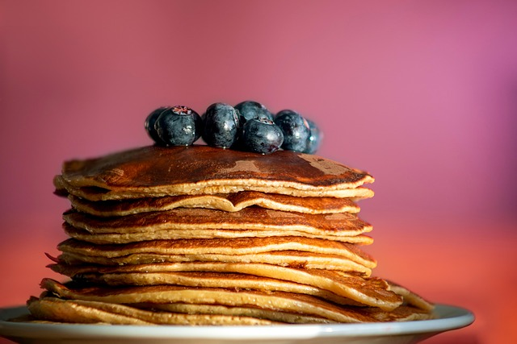

Pancakes

Description
Pancakes are a type of flatbread made from a batter and cooked on a griddle or frying pan. They are often served with syrup, butter, and various toppings.
Ingredients
- 1 cup all-purpose flour
- 2 tablespoons sugar
- 1 tablespoon baking powder
- 1/2 teaspoon salt
- 1 cup milk
- 1 large egg
- 2 tablespoons melted butter or vegetable oil
- 1 teaspoon vanilla extract (optional)
Steps
- In a large bowl, whisk together the flour, sugar, baking powder, and salt.
- In another bowl, beat the egg and then whisk in the milk, melted butter (or oil), and vanilla extract if using.
- Pour the wet ingredients into the dry ingredients and stir until just combined. Be careful not to overmix; a few lumps are okay.
- Heat a non-stick skillet or griddle over medium heat. Lightly grease with butter or oil.
- Pour about 1/4 cup of batter onto the skillet for each pancake. Cook until bubbles form on the surface and the edges look set, about 2-3 minutes.
- Flip the pancakes and cook for another 1-2 minutes until golden brown and cooked through.
- Remove from the skillet and keep warm. Repeat with the remaining batter.
- Serve the pancakes warm with your favorite toppings such as maple syrup, fresh fruit, or whipped cream.
Home